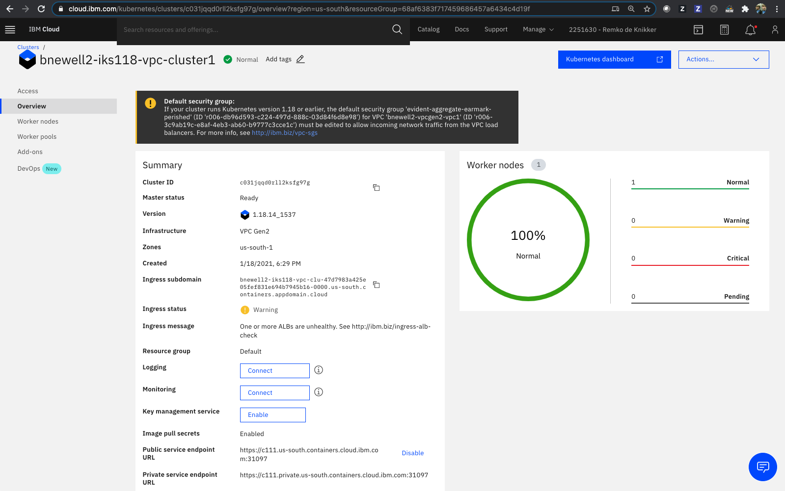

Create a Kubernetes Cluster for VPC¶
Create a cluster in your VPC in the same zone as the subnet. By default, your cluster is created with a public and a private service endpoint. You can use the public service endpoint to access the Kubernetes master.
Create the cluster in the VPC,
$ ibmcloud ks cluster create vpc-gen2 --flavor bx2.2x8 --name $MY_CLUSTER_NAME --subnet-id $MY_VPC_SUBNET_ID --vpc-id $MY_VPC_ID --zone $MY_ZONE --version $KS_VERSION --workers 1
Creating cluster...
OK
Cluster created with ID bvglln7d0e5j0u9lfa80
Review your IBM Cloud account resources.

Find your cluster and click the linked cluster name of the cluster you just created. If you do not see the cluster listed yet, wait and refresh the page.

Check the status of the new cluster,
ibmcloud ks clusters
MY_CLUSTER_ID=$(ibmcloud ks clusters --output json --provider vpc-gen2 | jq -r '.[] | select( .name=='\"$MY_CLUSTER_NAME\"') | .id ')
echo $MY_CLUSTER_ID
To continue with the next step, the cluster status and the Ingress status must indicate to be available. The cluster might take about 15 minutes to complete.
$ ibmcloud ks cluster get --cluster $MY_CLUSTER_ID
Retrieving cluster c57pqakd0fk24fuesujg...OK
Name: bnewell-iks120-vpc-cl1 ID: c57pqakd0fk24fuesujg State: deploying
Status: - Created: 2021-09-25 22:05:30 +0000 (8 minutes ago)
Resource Group ID: 0d71b6d02dba487a9826cc7e5c546dd0
Resource Group Name: bnewell-vpc-rg
Pod Subnet: 172.17.0.0/18
Service Subnet: 172.21.0.0/16
Workers: 1
Worker Zones: us-south-1
Ingress Subdomain: - †
Ingress Secret: - †
Ingress Status: -
Ingress Message: -
Public Service Endpoint URL: -
Private Service Endpoint URL: -
Pull Secrets: enabled in the default namespace
VPCs: r006-ae17b5d4-56b9-4dac-88dd-85fc3aa530ac
Master
Status: Deploy in progress. (7 minutes ago)
State: deploying
Health: -
Version: 1.20.10_1550
Location: Dallas
URL: -
† Your Ingress subdomain and secret might not be ready yet. For more info by cluster type, see 'https://ibm.biz/ingress-sub' for Kubernetes or 'https://ibm.biz/ingress-sub-ocp' for OpenShift.
Once the cluster is fully provisioned including the Ingress Application Load Balancer (ALB), you should see the Worker nodes status to be 100% Normal, the Ingress subdomain should be populated, among other,

Or via the CLI,
$ ibmcloud ks cluster get --cluster $MY_CLUSTER_ID
Retrieving cluster c57pqakd0fk24fuesujg...
OK
Name: remkohdev-iks120-vpc-cl1
ID: c57pqakd0fk24fuesujg
State: normal
Status: All Workers Normal
Created: 2021-09-25 22:05:30 +0000 (50 minutes ago)
Resource Group ID: 0d71b6d02dba487a9826cc7e5c546dd0
Resource Group Name: remkohdev-vpc-rg
Pod Subnet: 172.17.0.0/18
Service Subnet: 172.21.0.0/16
Workers: 1
Worker Zones: us-south-1
Ingress Subdomain: remkohdev-iks120-vpc-cl1-2bef1f4b4097001da9502000c44fc2b2-0000.us-south.containers.appdomain.cloud
Ingress Secret: remkohdev-iks120-vpc-cl1-2bef1f4b4097001da9502000c44fc2b2-0000
Ingress Status: warning
Ingress Message: One or more ALBs are unhealthy. See http://ibm.biz/ingress-alb-check
Public Service Endpoint URL: https://c127.us-south.containers.cloud.ibm.com:31169
Private Service Endpoint URL: https://c127.private.us-south.containers.cloud.ibm.com:31169
Pull Secrets: enabled in the default namespace
VPCs: r006-ae17b5d4-56b9-4dac-88dd-85fc3aa530ac
Master
Status: Ready (13 minutes ago)
State: deployed
Health: normal
Version: 1.20.10_1550
Location: Dallas
URL: https://c127.us-south.containers.cloud.ibm.com:31169
You can also check the status of the Application Load Balancer (ALB),
$ ibmcloud ks ingress alb ls --cluster $MY_CLUSTER_ID
OK
ALB ID Enabled State Type Load Balancer Hostname Zone Build Status
private-crc57pqakd0fk24fuesujg-alb1 false disabled private - us-south-1 ingress:/ingress-auth: disabled
public-crc57pqakd0fk24fuesujg-alb1 true enabled public 62809e32-us-south.lb.appdomain.cloud us-south-1 ingress:1.0.0_1699_iks/ingress-auth: healthy
Deploy the Guestbook Application¶
Now the cluster is fully provisioned successfully, you can connect to your cluster and set the current-context of the kubectl,
ibmcloud ks cluster config --cluster $MY_CLUSTER_ID
kubectl config current-context
If you have multiple configuration and contexts, you can easily switch between contexts,
kubectl config use-context $MY_CLUSTER_NAME/$MY_CLUSTER_ID
Deploy the guestbook application,
kubectl create namespace $MY_NAMESPACE
kubectl create deployment guestbook --image=ibmcom/guestbook:v1 -n $MY_NAMESPACE
kubectl expose deployment guestbook --type="LoadBalancer" --port=3000 --target-port=3000 -n $MY_NAMESPACE
List the created service for guestbook,
$ kubectl get svc -n $MY_NAMESPACE
NAME TYPE CLUSTER-IP EXTERNAL-IP PORT(S) AGE
guestbook LoadBalancer 172.21.139.220 b0384765-us-south.lb.appdomain.cloud 3000:32498/TCP 116s
Create environment variables for the public IP address of the LoadBalancer service, the NodePort, and the port,
SVC_EXTERNAL_IP=$(kubectl get svc -n $MY_NAMESPACE --output json | jq -r '.items[] | .status.loadBalancer.ingress[0].hostname ')
echo $SVC_EXTERNAL_IP
SVC_NODEPORT=$(kubectl get svc -n $MY_NAMESPACE --output json | jq -r '.items[].spec.ports[] | .nodePort')
echo $SVC_NODEPORT
SVC_PORT=$(kubectl get svc -n $MY_NAMESPACE --output json | jq -r '.items[].spec.ports[] | .port')
echo $SVC_PORT
Note the external IP address is set to the hostname of one of two Load Balancers for VPC. See the Load balancers for VPC in the IBM Cloud VPC Infrastructure listing.

Try to send a request to the guestbook application,
curl http://$SVC_EXTERNAL_IP:$SVC_PORT
url: (7) Failed to connect to b0384765-us-south.lb.appdomain.cloud port 32498: Connection timed out
Even if you have created a LoadBalancer service with an external IP, the service cannot be reached because the VPC does not include a rule to allow incoming or ingress traffic to the service.
Update the Security Group¶
To allow any traffic to applications that are deployed on your cluster's worker nodes, you have to modify the VPC's default security group by ID.
Update the security group and add an inbound rule for the NodePort of the service you created when exposing the guestbook deployment. I only want to allow ingress traffic on the NodePort, so I set the minimum and maximum value of allowed inbound ports to the same NodePort value.
$ ibmcloud is security-group-rule-add $MY_DEFAULT_SG_ID inbound tcp --port-min $SVC_NODEPORT --port-max $SVC_NODEPORT
Creating rule for security group r006-3541d535-2c0d-4fac-8811-b6f4f0a76690 under account IBM Client Developer Advocacy as user bnewell@email.com...
ID r006-b23ee8eb-1860-4c2b-b758-86ae0dea4f08
Direction inbound
IP version ipv4
Protocol tcp
Min destination port 32498
Max destination port 32498
Remote 0.0.0.0/0
List all the security group rules,
$ ibmcloud is security-group-rules $MY_DEFAULT_SG_ID
Listing rules of security group r006-3541d535-2c0d-4fac-8811-b6f4f0a76690 under account IBM Client Developer Advocacy as user bnewell@email.com...
ID Direction IP version Protocol Remote
r006-95a98531-df4c-4ac6-b8a0-3af8e8e4bb64 outbound ipv4 all 0.0.0.0/0
r006-b0a5dd7b-e494-4829-8d7a-af391c903745 inbound ipv4 all stadium-reemerge-vexingly-spotted
r006-b23ee8eb-1860-4c2b-b758-86ae0dea4f08 inbound ipv4 tcp Ports:Min=32498,Max=32498 0.0.0.0/0
Or add a security group rule to allow inbound TCP traffic on all Kubernetes ports in the range of 30000–32767.
Try again to reach the guestbook application,
$ curl http://$SVC_EXTERNAL_IP:$SVC_PORT/hello
Hello from guestbook. Your app is up! (Hostname: guestbook-58df645464-rscpd)
Or open the Guestbook in a browser,

If you want to understand better how the load balancing for VPC works, review the optional extra section Understanding the Load Balancer for VPC
You can try removing the inbound rule again to check if the VPC rejects the request again,
ibmcloud is security-group-rule-delete $MY_DEFAULT_SG_ID $MY_DEFAULT_SG_RULE_ID
Conclusion¶
You are awesome! You secured your Kubernetes cluster with a Virtual Private Cloud (VPC), managing direct access to your cluster. Security is an important integral part of any software application development and airgapping your cluster by adding a VPC is a first step in securing your cluster, network and other resources.
Next¶
Next, Cleanup the resources you created or go back to Kubernetes Networking.